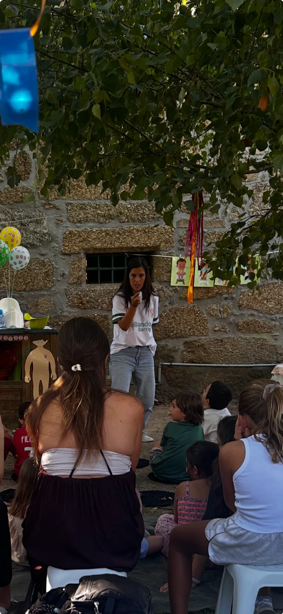
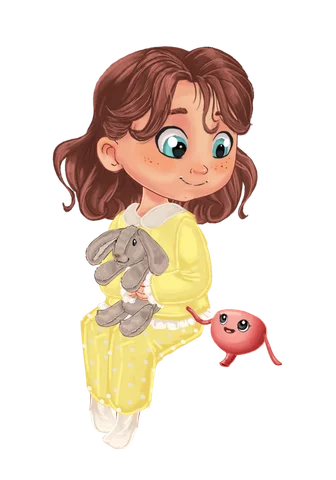

É uma sessão de leitura do livro?
Não. A apresentação não é uma leitura do livro, mas uma conversa interativa, com histórias, personagens, momentos de partilha e atividades que ajudam as crianças a compreender o corpo de forma prática e divertida.
Apresentações para escolas e instituições
Uma experiência interativa e divertida sobre o corpo, a barriga e os seus sinais, pensada para crianças dos 3 aos 7 anos.
Não é uma sessão de leitura, mas sim uma conversa viva, com histórias, personagens e atividades que ajudam as crianças a conhecer melhor o seu corpo com naturalidade.
Pedir informações →

Perguntas essenciais
Levamos o universo do Bando da Barriga a escolas, bibliotecas, livrarias e outras instituições, com sessões adaptadas a cada grupo.
Não. A apresentação não é uma leitura do livro, mas uma conversa interativa, com histórias, personagens, momentos de partilha e atividades que ajudam as crianças a compreender o corpo de forma prática e divertida.

As apresentações são pensadas especialmente para crianças dos 3 aos 7 anos, com uma linguagem adequada a cada faixa etária.

Falamos sobre o corpo, a barriga, o intestino e os seus sinais, em momentos de conversa, imagens e atividades práticas. As crianças aprendem de forma leve e natural, sempre com espaço para perguntas.
Sim! As apresentações são muito participativas. As crianças são convidadas a pensar, responder, partilhar experiências e fazer pequenas atividades, sempre num ambiente seguro e acolhedor.
Ser Capitão do Bando significa conhecer o próprio corpo, ouvir os seus sinais e cuidar dele com atenção e naturalidade. No final da sessão, todas as crianças são convidadas a tornar-se Capitãs e Capitães do Bando da Barriga!

Vamos a escolas, bibliotecas, livrarias, associações e outras instituições. As sessões podem ser adaptadas ao espaço e ao número de crianças.
Perguntas frequentes
A duração é combinada no momento da marcação, tendo em conta o grupo e a organização do espaço. Ao pedir informações, indique quanto tempo tem disponível.
O número de participantes é definido em conjunto para permitir a participação das crianças. Indique o número previsto e se pretende reunir um grupo ou organizar várias sessões.
As necessidades de materiais e de preparação do espaço são confirmadas antes da apresentação. No primeiro contacto, pode indicar os recursos que já tem disponíveis.
Não é necessário conhecer a história para acompanhar a apresentação. Se o grupo já tiver explorado o livro, partilhe essa informação no contacto inicial.
Envie um email com a localidade, o espaço, as datas pretendidas, as idades e o número previsto de participantes. A disponibilidade, as condições e o valor são confirmados em resposta ao pedido.
Entre em contacto assim que tiver uma data ou um período em mente. A realização depende da disponibilidade, pelo que a data fica confirmada após contacto.
Sim. Indique no contacto inicial as adaptações de acessibilidade ou de participação de que o grupo necessita, sem enviar dados pessoais ou de saúde das crianças. Assim, podemos conversar sobre as condições necessárias e o que será possível preparar.
Se representa uma escola, biblioteca, livraria, associação ou outra instituição e tem interesse em receber o Bando da Barriga, entre em contacto connosco para mais informações.
Pedir informações →